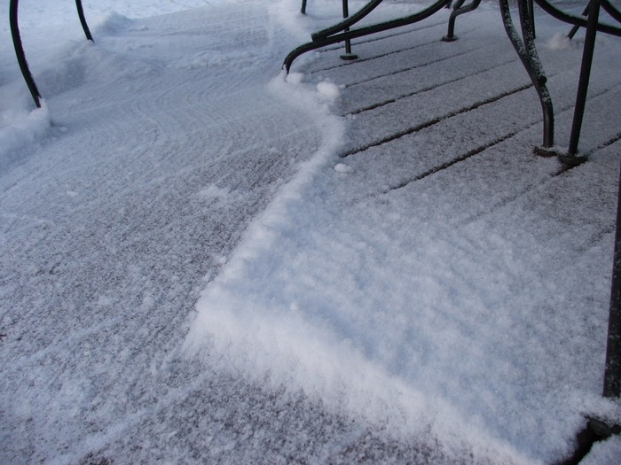
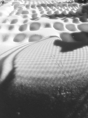
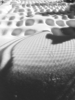

Next Photo
-
Vote
Sweeping the Snow
The path of a broom through the night's flurries. Texture of the snow and bristles is left and the lines of the deck are contrasted with the curve of the broom's path.
More...
ID: 17
Title: Sweeping the Snow
Description: The path of a broom through the night's flurries. Texture of the snow and bristles is left and the lines of the deck are contrasted with the curve of the broom's path.
Keywords: broom snow deck line
Hidden: n
Date added: 2010-08-24 12:53:53 UTC
Date taken: 2006-01-11 07:47:12 UTC
Camera: FUJIFILM.FinePix S5100 .
Resolution: 2272x1704
Mode:
Shutter speed: 740/100
Flash: 16
Exposure time: 10/1700
Iso: 100
Metering: 5
Aperture: 300/100
Focal length: 570/100
Artist: NathanielGuy Mahieu
Copyright: 2006 NathanielGuy Mahieu
Views: 3930
 
